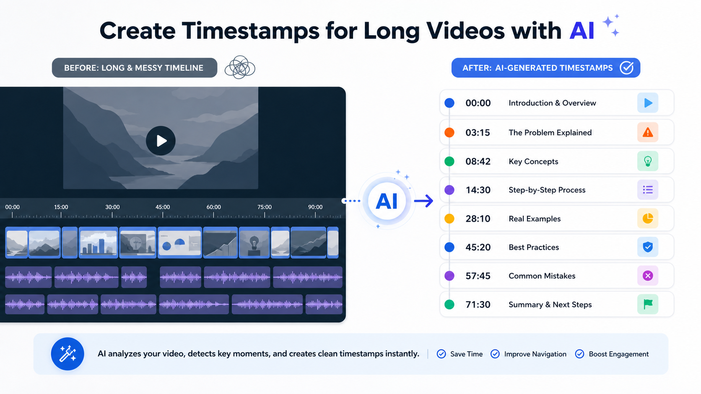

Промтзилла
Таймкоды помогают зрителю быстро найти нужное место в длинном видео: вебинаре, интервью, лекции или обзоре.

Пошаговая инструкция
- 1Загрузи видео или расшифровку.
- 2Попроси найти смену тем и ключевые моменты.
- 3Задай формат таймкода: 00:00 — название главы.
- 4Попроси сделать названия короткими и понятными.
- 5Сверь границы глав с реальным видео и поправь минуты вручную.
Какой результат просить
Хорошие таймкоды не должны быть слишком частыми: лучше 8-15 глав для длинного видео, чем отметка на каждую мелочь. Под такую задачу удобно открыть анализ видео нейросетью онлайн, дать исходник и сразу попросить структурированный результат.
Промт
RU
Сделай таймкоды для этого видео. Формат: 00:00 — короткое название главы 00:00 — короткое название главы Требования: — выдели основные темы и повороты разговора; — не дроби видео слишком мелко; — названия глав делай короткими, понятными и полезными для зрителя; — отдельно отметь самые важные цитаты или моменты; — в конце дай краткое описание видео в 2-3 предложениях. Если таймкод примерный, пометь его как приблизительный.
EN
Create timestamps for this video. Format: 00:00 — short chapter title 00:00 — short chapter title Requirements: — identify the main topics and conversation shifts; — do not split the video into too many tiny parts; — make chapter titles short, clear, and useful for viewers; — separately mark the most important quotes or moments; — provide a 2-3 sentence video description at the end. If a timestamp is approximate, mark it as approximate.
Важно
Перед публикацией таймкоды лучше открыть в плеере и проверить, что глава начинается в нужном месте.
Теги